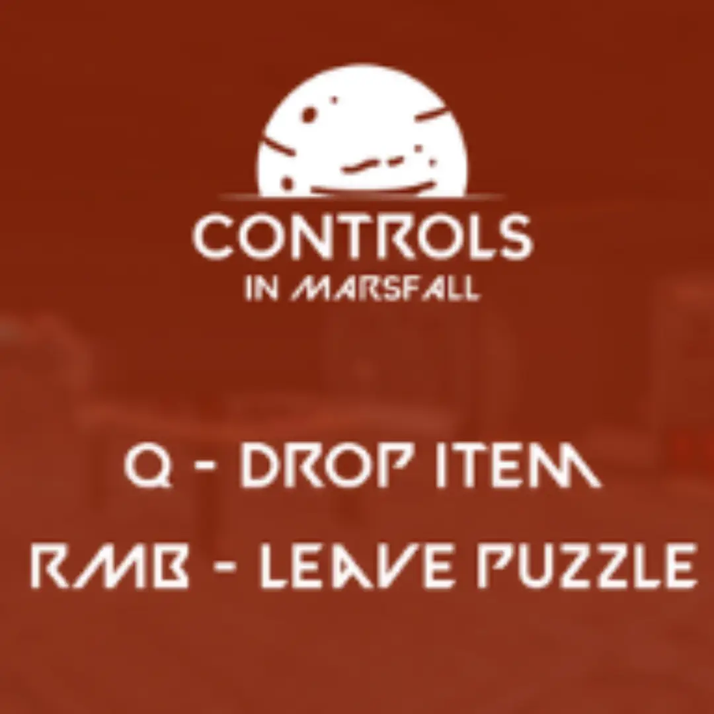
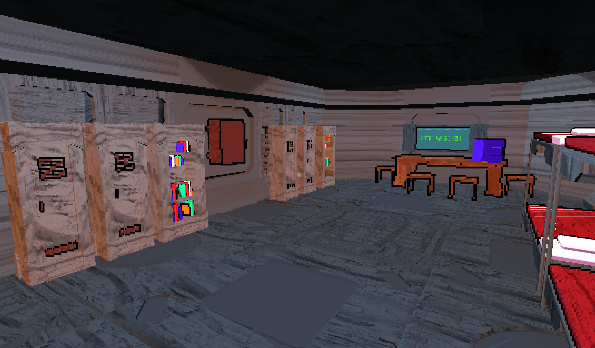

Marsfall
Sci-fi industrial sound design for a Brackeys Game Jam 2024 entry

About the Sound Design
All sounds in this game were created by me and my friend Dawid Blacharski. We crafted immersive industrial sounds including pipes, ambients, cables, electricity, and much more for this sci-fi adventure.
This project was created for the Brackeys Game Jam 2024, showcasing our ability to create atmospheric soundscapes for space-themed games.

Game Trailer
Ready to Experience Marsfall?
Dive into this atmospheric sci-fi adventure and experience the immersive sound design firsthand.